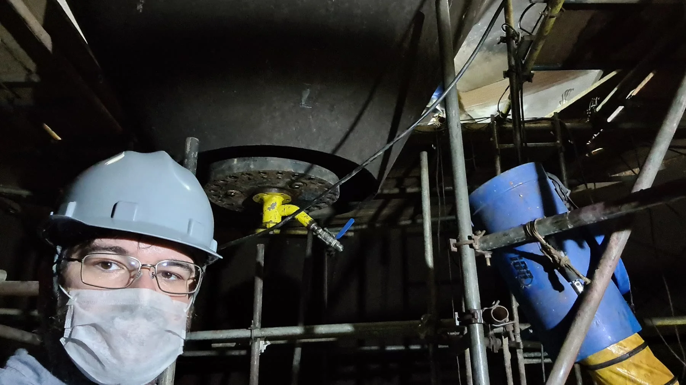
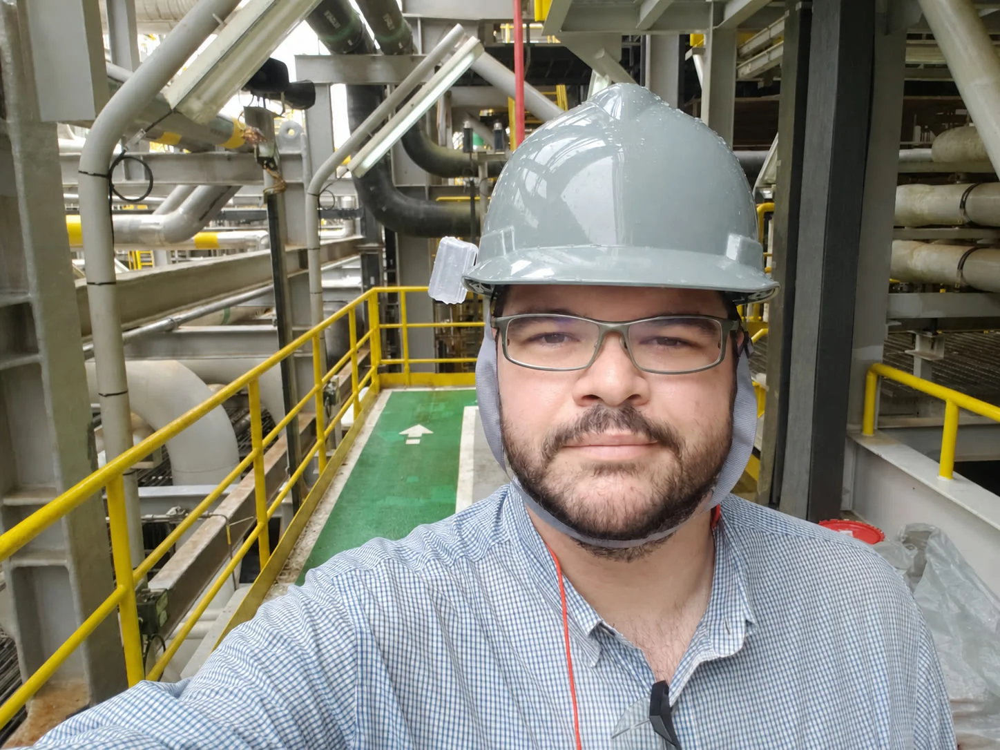
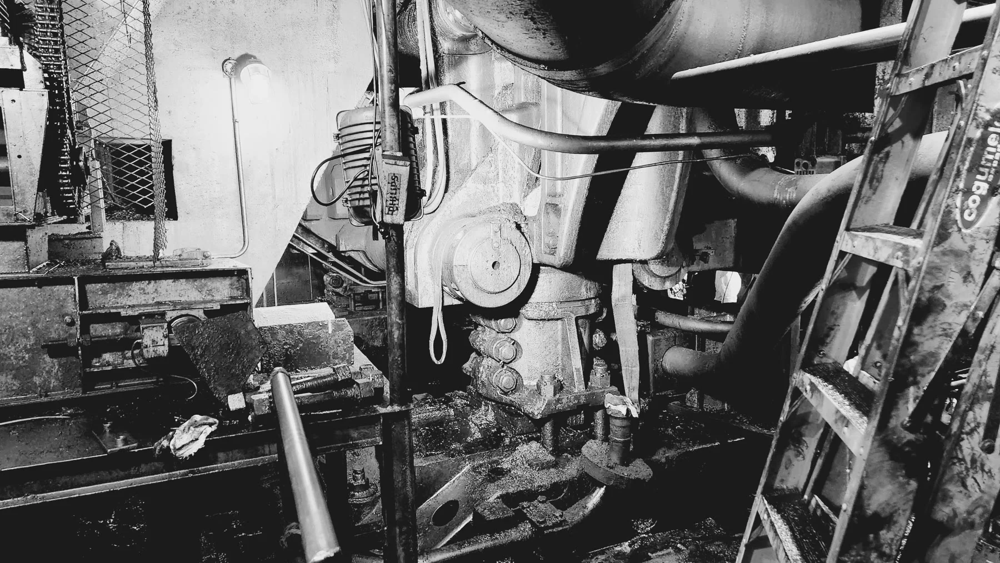
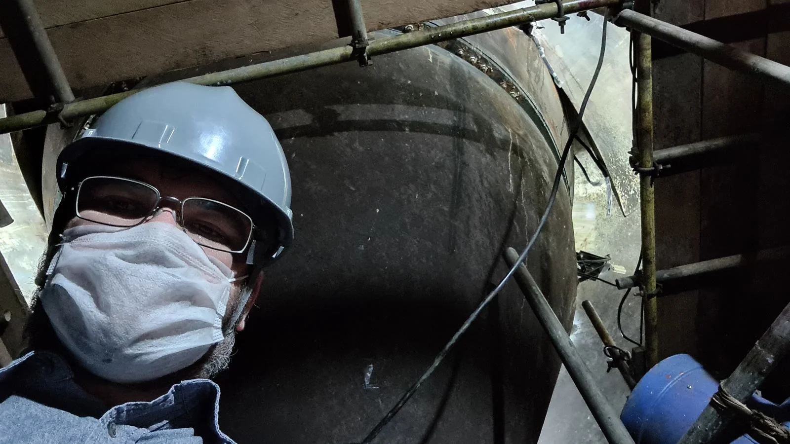
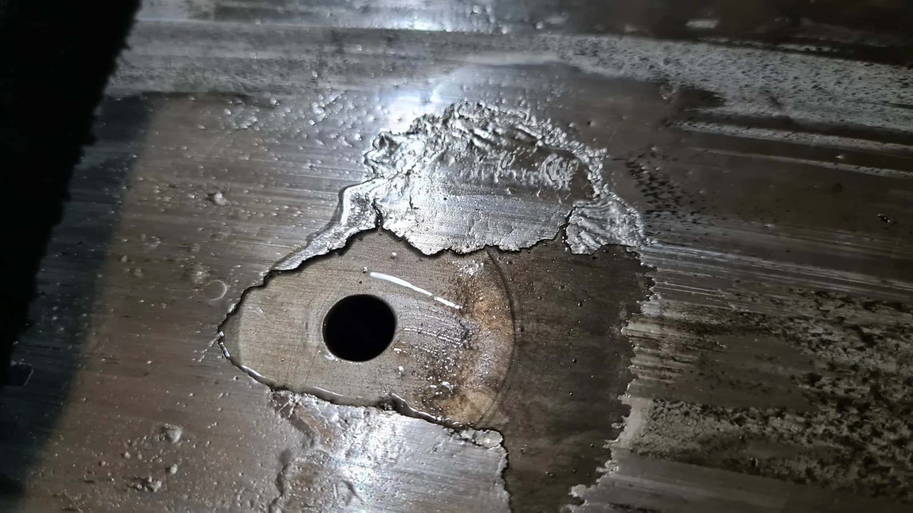

Pablo Sanches Garcia
Equipe técnica PSG

A PSG nasceu da prática pericial e se consolidou como referência técnica para empresas, escritórios e seguradoras diante de situações críticas.
A PSG Perícia em Engenharia atua em análises técnicas de alta complexidade nos ramos mecânico, civil e correlatos.
Pablo Sanches Garcia conduz essa atuação, e a PSG carrega o mesmo rigor que sustenta um laudo quando ele é contestado.

Toda análise da PSG segue o mesmo caminho: entender o cenário, investigar a causa, sustentar cada conclusão em documentação rastreável e traduzir isso para quem precisa decidir.
A independência técnica é condição do trabalho. A função da PSG é dizer o que a engenharia mostra, com a fundamentação necessária para que essa leitura resista a questionamento.



Equipe técnica PSG
Equipe técnica PSG
Equipe técnica PSG
Cada situação técnica pode pedir uma especialidade diferente. A PSG coordena tecnicamente essa atuação, reunindo as disciplinas de engenharia necessárias para dar conta do problema, com um único ponto de responsabilidade sobre a análise.